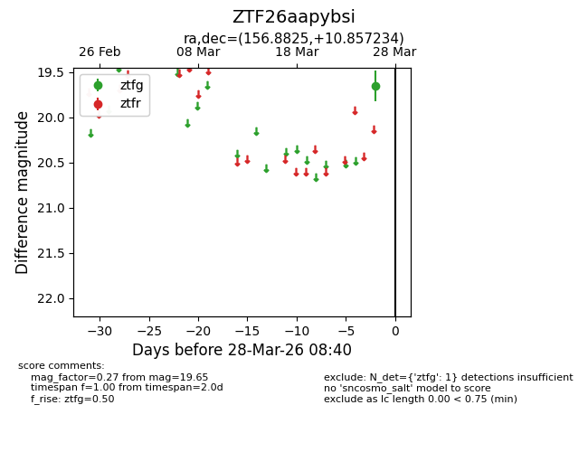
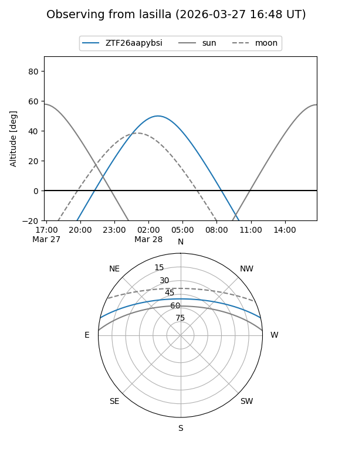
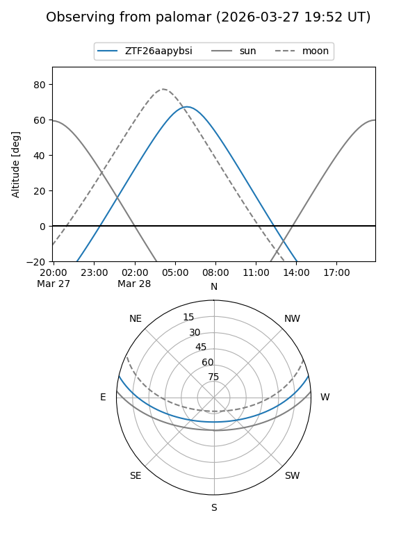

ZTF26aapybsi
Target ZTF26aapybsi at 2026-03-28 08:42
Aliases and brokers:
FINK: link
Lasair: link
ALeRCE: link
alt names
ZTF26aapybsi (ztf,fink_ztf)
Coordinates:
equatorial (ra, dec) = 156.8825,+10.85723
equatorial (HMS+DMS) = 10:27:31.79,+10:51:26.04
galactic (l, b) = (231.5852,+52.48776)
Flags:
Photometry:
last ztfg=19.65
1 ztfg detections
Lightcurve

Visibility


Additional plots